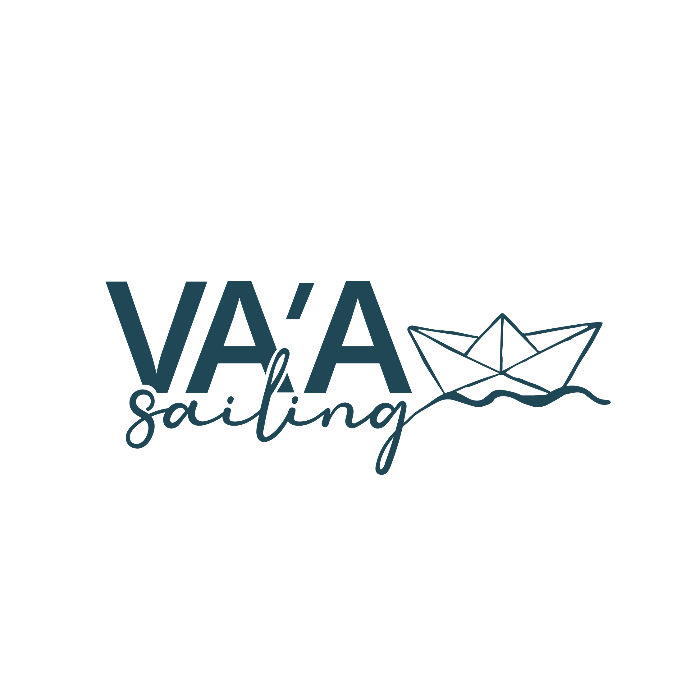

Quiénes somos
Somos Lucía y Simón, una pareja que eligió construir su vida alrededor del mar.

El océano como guía, la sostenibilidad y el bienestar como destino
Documentando la realidad de vivir, navegar y explorar de forma sustentable
ScrollNDS — NEED DEVELOPS SKILLS — VAASAILING.COM
Nuestra historia. Nuestro propósito
Somos Lucía y Simón, una pareja que eligió construir su vida alrededor del mar.
Nace en 2017, de una incomodidad. De ver de cerca la contaminación y las contradicciones de la industria náutica.
En 2026 comenzamos una expedición: dar la vuelta al mundo a bordo del NDS Zero.
Porque creemos que el océano no es infinito y sentimos la responsabilidad de actuar.
NDS · NEED DEVELOPS SKILLS
La sustentabilidad es un hábito.
No existe la sustentabilidad al 100%, pero podemos hacer grandes cambios.
Cualquiera puede navegar. Se puede vivir con menos.
Historias reales de navegación, aprendizajes, desafíos y momentos que forman parte de nuestra vida en el mar.
 EP. 00
EP. 00
Este es el comienzo de todo. Lucía y Simón toman la decisión de dejar atrás la vida conocida para perseguir un sueño: vivir a bordo de un velero y dar la vuelta al mundo. Una historia de cambios, incertidumbre y el primer paso hacia una vida guiada por el océano.
Ver episodio → EP. 01
EP. 01
Después de tomar la decisión de cambiar de vida, llega el momento de dar los primeros pasos. Entre preparativos, emociones e incertidumbre, el viaje empieza a convertirse en una realidad y el océano deja de ser un sueño para transformarse en el nuevo hogar.
Ver episodio → EP. 02
EP. 02
Finalmente llega el momento que Lucía y Simón esperaron durante años: la entrega del barco. Pero cuando el sueño parece estar al alcance de la mano, aparecen nuevos obstáculos y decisiones inesperadas. Un episodio sobre paciencia, incertidumbre y aprender que, a veces, los planes cambian por una razón.
Ver episodio → EP. 03
EP. 03
Después de tanta espera, finalmente llega el momento de soltar amarras y navegar por primera vez a bordo de su nuevo hogar. Entre emoción, aprendizaje y los primeros desafíos en el mar, Lucía y Simón comienzan a convertir aquel sueño lejano en una aventura real.
Ver episodio →Muy pronto vas a poder descubrir una nueva historia de VA'A Sailing. Suscribite al canal para no perderte el próximo episodio.
Suscribirse →